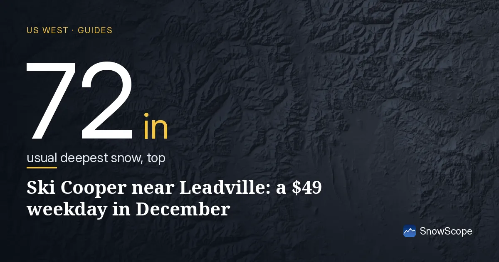
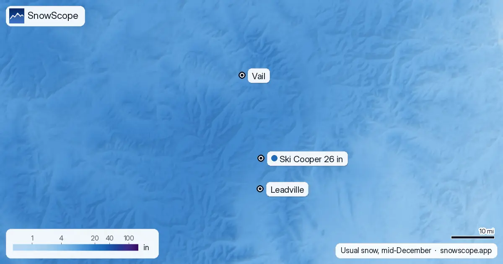

Ski Cooper حدا Leadville: ثمن 49 $ وسط السيمانة فدجنبر
Ski Cooper هي بحال البلايص اللي كيتبادلو فيها سكي الميزانية المحدودة النصايح: محطة عالية وبسيطة حدا Leadville خلات ثمن الكبار وسط السيمانة فـ49 $ لـ2026-27. العلو ديال التلج فدجنبر هنا متوسط ماشي عميق بزاف، ولكن عالي بزاف ومبكر بزاف.
شوف توقعات التلج مباشرة ديال Ski Cooper فالتطبيق ديال SnowScopeالعلو ديال التلج، التنبيهات والخريطة 3D، فابور.
العلو هو نقطة البيع
التيليفيريك ديال Cooper كيبدا من حوالي 10,580 ft (3,226 m) وكيوصل لحوالي 11,740 ft (3,579 m) على الخريطة ديالنا، بـ5 تيليفيريكات وحوالي 20 mi (32 km) ديال البيست. فشتاء عادي ديال السجل ديالنا، التلج اللي كيدوم كيوصل لنص الجبل فبداية أكتوبر، من بين الأبكر فكولورادو.

علو متوسط، فرص مزيانة
التلج ماكيتراكمش بزربة رغم هادشي. ف1 دجنبر عادي، فنص الجبل، حوالي 11,160 ft (3,402 m)، كاين 18 in (46 cm)؛ ف15 دجنبر، 26 in (66 cm)؛ فنهار عيد الميلاد، 31 in (79 cm). الطرف الفوقاني بالكاد أعمق، 27 in (69 cm) ف15 دجنبر عادي.
ف15 دجنبر، 70 % ديال الشتوات كان فيها 20 in (50 cm) أو كثر فنص الجبل، و91 % كان فيها على الأقل 10 in (25 cm). ف25 دجنبر النسبة فوق 20 in كتوصل لـ80 %. دجنبر ناقص كيخلي 11 in (29 cm) فالنهار 15: كافي للبيست المهيأة والسهلة اللي معروف بيها Cooper.

القسمة ديال وسط السيمانة
لـ2026-27، Ski Cooper خلات أثمان العام اللي فات: التيكي اليومي للكبار (22-68 عام) ثمنو 49 $ من الإتنين حتى الجمعة، برا العطل، و99 $ فالويكاند والعطل. الستراتيجية كاملة ديال الميزانية فسطر وحد: سكي ف Cooper وسط السيمانة.
Cooper، Loveland ولا Vail؟
Loveland، المحطة العالية لاخرى ديال Front Range، كتبيع أونلاين بـ60 $ حتى 13 دجنبر ومن بعد بثمن الكيشي 159 $ من 14 دجنبر، بـ29 in (74 cm) فنص الجبل ف15 دجنبر عادي و67 % ديال الشتوات فوق 20 in. تلج مشابه، وثمن Cooper ديال وسط السيمانة كيبقى أقل طول الشهر.
Vail، المحطة الكبيرة الجارة، كان عندها 24 in (62 cm) فنص الجبل ف15 دجنبر عادي حسب الأرقام ديالنا؛ ماقارناش الأثمان ديالها. على الأقل فبداية دجنبر، العلو ديال Cooper كيخليها فنفس المستوى ديال جارتها المشهورة فالتلج.
البارح واليوم
Cooper صمدات أحسن من بزاف: العلو العادي ديال 15 دجنبر فنص الجبل كان 26 in (66 cm) فأول 15 شتاء ديال السجل ديالنا و24 in (60 cm) فآخر 15، رغم أن النسبة فوق 20 in هبطات من 80 % لـ53 %. الشتاء اللي فات كان فيه 16 in (42 cm) فهاد التاريخ.
نصايح للي كيتزلجو
- سكي من الإتنين حتى الجمعة برا العطل باش تلقى ثمن 49 $.
- Leadville فعلو حوالي 10,000 ft: بات فيها ليلة قبل ماتسكي بقوة.
- Tennessee Pass (US-24) يمكن يكون مزلق وفيه الريح: دير السلاسل وشوف حالة الطريق قبل ماتخرج.
- البرد هو الخطر الرئيسي فبداية الموسم هنا: دير طبقات سخونة كثر ممن كتخيل.
المراجع والمصادر
- Ski Cooper, day pass 2026-27 (official) www.skicooper.com/cooper-day-pass/
- Loveland Ski Area, lift tickets 2026-27 (official) skiloveland.com/lift-tickets/
- OpenSkiMap (mapped lifts and runs) openskimap.org/
- avalanche.org, US avalanche centers and forecasts avalanche.org/
على هاد الأرقام
أرقام التلج: التاريخ ديال التلج ديال SnowScope، 46 شتوة اللي فاتت (1980-81 حتى ل 2025-26) فالعلوات المكتوبة (التحت، الوسط، الفوق)، إعادة بناء ديال التلج اللي فات لمنطقة مصححة بالعلو (على أساس ERA5-Land؛ Snow_Hydro 1 كم للمغرب)، ماشي البلاغات ديال المحطة. التلج دابا: الخريطة ديال SnowScope. التيليسييجات والبيستات والعلوات: الخرايط ديال OpenSkiMap. الأثمنة: الصفحات الرسمية اللي لتحت، متشافة نهار 13 نونبر 2026؛ الأثمنة الدينامية كتبدل مع التاريخ والطلب.
النشرات الرسمية ديال الانهيارات: Colorado Avalanche Information Center
كيفاش تستاشهد بهاد المقال
للبحث، التعليم ولا الصحافة: الأرقام والرسومات تقدر تعاود تخدم بيهم بحرية تحت CC BY 4.0 مع هاد الاستشهاد.
SnowScope (2026), Ski Cooper حدا Leadville: ثمن 49 $ وسط السيمانة فدجنبر, https://snowscope.app/blog/ar/2026/11/ski-cooper-leadville-december-49-dollar-weekday.html, تشاف ف 2026-11-15
SnowScope (Atlas Labs). (2026, November 15). Ski Cooper حدا Leadville: ثمن 49 $ وسط السيمانة فدجنبر. SnowScope snow reports. https://snowscope.app/blog/ar/2026/11/ski-cooper-leadville-december-49-dollar-weekday.html
BibTeX
@misc{snowscope2026skicooperleadvilledecemb,
author = {{SnowScope (Atlas Labs)}},
title = {Ski Cooper حدا Leadville: ثمن 49 $ وسط السيمانة فدجنبر},
year = {2026},
month = nov,
howpublished = {\url{https://snowscope.app/blog/ar/2026/11/ski-cooper-leadville-december-49-dollar-weekday.html}},
note = {Published 2026-11-15 09:34 UTC; accessed 2026-11-15}
}· CC BY 4.0 · الطريقة، الداتا والأدوات →
Ski Cooper: التلج والحرارة حسب العلو، هاد الشتا مقارنة مع اللي فاتت (الأدوات) →
تابع Ski Cooper
فابور: ميساج ملي يجي التلج، والتوقعات كل صباح.